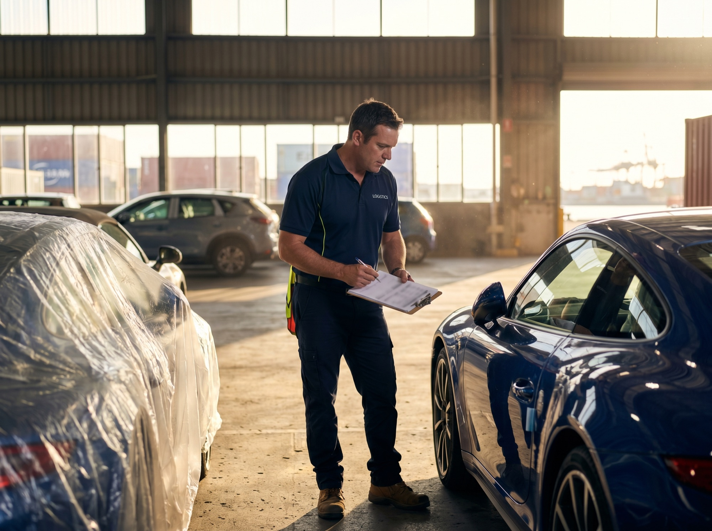
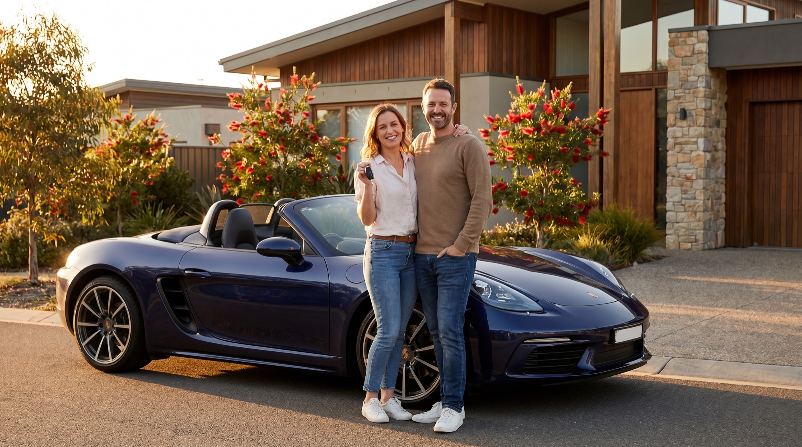
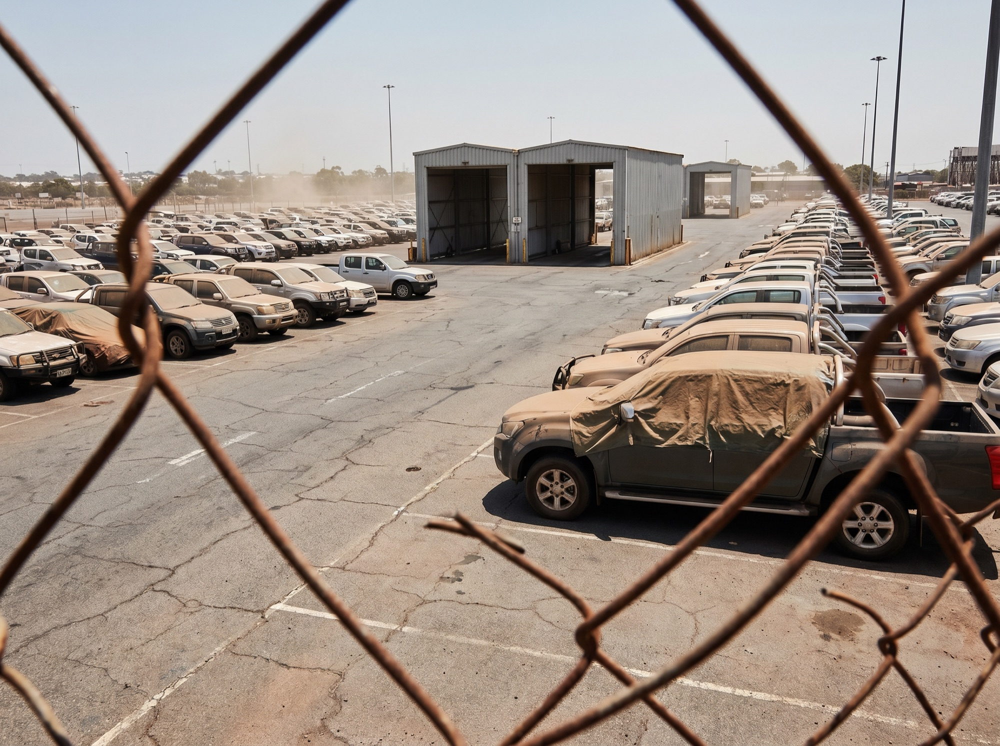

Low-Mileage. Pristine. Done For You.
Get a fast, obligation-free quote to import your car from Singapore into Australia. Thanks to Singapore's COE system, cars are typically immaculately kept and low-mileage — and they're already right-hand drive, so there's no steering conversion. No guesswork, no hidden costs, no compliance surprises.
Singapore is one of the best-kept secrets in car importing. Its Certificate of Entitlement (COE) system means many premium cars are deregistered around the 10-year mark — immaculately maintained, low-mileage and right-hand drive. But importing into Australia is still regulated: the 25-year rule, SEVS eligibility and asbestos rules all apply, and one mistake can cost you. Dazmac handles the entire process end-to-end, so your Singapore import lands clean and ready to register.

importing vehicles into Australia under every major scheme.
of Australian import regulations & compliance pathways.
no nasty surprises or last-minute invoices at the port.
real people on the phone — not an automated call centre.
regular consolidation and RORO sailings direct from the Port of Singapore.
From low-mileage luxury and European performance to prestige exotics and JDM imports — we move Singapore's pristine, well-kept cars into Australian ports under the right scheme, every time. All right-hand drive, all ready for Aussie roads.
Mercedes-Benz, BMW & Lexus deregistered at the 10-year COE mark — meticulously maintained, low-kilometre prestige sedans. Shared container & RORO direct from the Port of Singapore.
Porsche, AMG & M-cars — high-output European performance kept in immaculate condition, complianced for Australia.
Supercars & rare exotics — low-volume cars moved with secure, low-clearance shared-container freight.
Premium SUVs & family flagships — pristine, low-mileage examples shipped & complianced for Aussie roads.
Japanese performance & everyday legends already living in Singapore — all RHD, handled end-to-end.
We manage every stage of your import from Singapore — from purchase & port collection to Australian delivery. One team. One quote. No hand-offs, no surprises.
Get Instant QuoteWe first confirm whether your Singapore vehicle can legally be imported into Australia — checking the 25-year rule, SEVS Register and Personal Import Scheme before you commit. We verify the original build date that determines eligibility.
No eligibility? We tell you upfront — saving you time and money.
Vehicle Import Approvals (VIA) through ROVER, Singapore deregistration & export paperwork, customs declarations and biosecurity requirements. This is where many imports fail — our experience prevents costly errors.
We collect the vehicle and load it direct from the Port of Singapore — one of the world's busiest, best-connected ports — via shared container or RORO, with realistic timelines and full transparency throughout the ~16-day journey.
We manage customs clearance, coordinate inspections, asbestos testing and RAW compliance work to ensure every Australian standard is met. No confusion. No last-minute surprises.
Once approved and compliant, your vehicle is released and delivered — ready for registration in your state or territory.
Importing from Singapore operates under multiple Australian government pathways. Picking the wrong one is the most common — and most expensive — mistake. Here's how we match your car to the right scheme.
Vehicles 25 years or older (measured by build date, not model year) qualify for import under concessional entry — ideal for the older classics and collectables that Singapore enthusiasts have preserved in superb, climate-controlled condition.
For modern performance, rare, or unique vehicles meeting one of six eligibility criteria — think Porsche, AMG, M-cars and prestige exotics, many available in Singapore in exceptional condition. All SEVS imports must be processed by a Registered Automotive Workshop (RAW).
Singapore is home to a large Australian expat community. Australian citizens, PRs and eligible visa holders relocating home who've owned their vehicle for 12+ months can import it under the Personal Import option — one vehicle per five years.

Whether you're relocating from Singapore or importing one car or a whole fleet, the process is handled with the same precision.
Buying a pristine, low-mileage car from Singapore — one vehicle, handled like it's our own.
Rare prestige, performance and exotic cars in exceptional condition — SEVS, 25-year and concessional pathways.
Relocating from Singapore under the Personal Import Scheme — with proper documentation & timing.
Commercial vehicles, dealer stock & bulk movements with consolidated freight and customs clearance.

A great Singapore car is only a bargain if it can actually be imported. The most expensive part of importing from Singapore is usually the part you didn't check first.
With Dazmac, you get it done right the first time.
Importing from Singapore into Australia is highly regulated. Freight companies ship cars. Dazmac imports them.
Singapore's Certificate of Entitlement (COE) system makes owning a car expensive long-term, so many premium vehicles are deregistered and sold for export around the 10-year mark — typically with low mileage, full service history and immaculate condition thanks to strict local standards. They're also right-hand drive, making them a natural fit for Australian roads.
As a guide, sea freight from the Port of Singapore averages around 16 days, and VIA processing typically takes 3–4 weeks (these can overlap). Add compliance and delivery time on arrival. We'll provide a realistic, end-to-end estimate during your quote.
It depends on the vehicle. Cars 25 years or older qualify under the 25-year rule; newer performance, rare or prestige models may qualify via the SEVS Register; and if you're relocating, the Personal Import Scheme may apply. A 10-year COE car is not automatically eligible — we confirm exactly which pathway fits your car before you commit.
No. Singapore drives on the left and its cars are right-hand drive — the same as Australia — so there's no steering conversion required.
No. We provide transparent pricing and explain all potential costs upfront — including Singapore port handling, freight, marine insurance, customs duty, 10% GST, Luxury Car Tax (if applicable), asbestos testing, compliance work and delivery.
Australia has a zero-tolerance asbestos policy, and some vehicles can carry asbestos in brakes, gaskets and clutches. Testing is mandatory and costs roughly $800–$1,000 if done locally. We can coordinate offshore testing before shipment to save you time and money.
1 Citywest Court,
Gilberton QLD 4208, Australia
Don't leave your Singapore import to chance. Work with specialists who understand both Asian logistics and Australian regulations inside out. Start with a free quote today.
Get Your Free Import Quote Now